Programas Ubuntu
Algunos de los programas o comandos que mostramos a continuación son más que nada para ayudar con algunas necesidades que se presenten.
Nos puede recomendar algunos programas para subir a nuestra WEB o si encuentra algún problema con algunos links o comandos le agradecemos informar para mantener esta página activa. igual todos los comandos y los link fueron actualizados el 19-10-2021.
Sistema Operativo:
Arquitectura:
Comandos Basicos
- Para actualiza la lista de paquetes disponibles y sus versiones
- descargado la lista de software disponible y la versión en la que se encuentra
- Los 2 comando combinados
- Para Instalar las dependencias
sudo apt update
sudo apt upgrade
sudo apt update && sudo apt upgrade
sudo apt -f install
Idiomas del Sistema
Comandos Para la cosola
- Para mostrar los archivos de la carpeta en el terminal
- Para volver al princio de las carpetas
- Para limpiar la terminal
ls -la
cd
clear
Neofetch
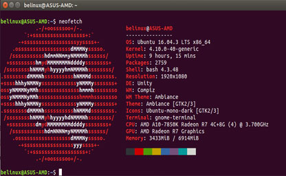Neofetch muestra información en el terminal sobre su sistema junto a una imagen, el logotipo de su sistema operativo o cualquier archivo ASCII de su elección.
- Instalamos neofetch
- Ejecutar neofetch al abrir la terminal
- Al final del documento agregamos el nombre del programa
sudo apt install neofetch
sudo gedit /etc/bash.bashrc
neofetch
grub customizer
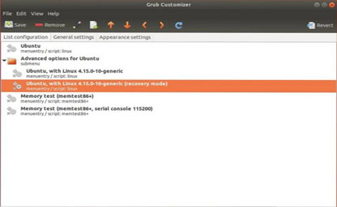Grub Customizer es una interfaz gráfica para configurar los ajustes y las entradas de menú de GRUB2/BURG
- Instalamos grub customizer
- Pagina de temas gnome-look.org
- Crear carpeta Themes
- comprobamos que se creo la carpeta
- Extraer y mover el tema a la carpeta themes
- Ej:
sudo cp -R [ruta del tema descargado] /boot/grub/themes/ - Editar el archivo /etc/default/grub
- Buscamos la linea #GRUB_THEME, de no existir hay que crearla. Tiene que quedar asi: GRUB_THEME=/boot/grub/themes/[nombre de la carpeta]/[nombre del archivo de texto dentro de la carpeta]
- Por último actualizamos el grub
sudo apt install grub-customizer
sudo mkdir /boot/grub/themes
ls /boot/grub
sudo cp -R /home/usuario/Descargas/toshiba /boot/grub/themes/
sudo gedit /etc/default/grub
GRUB_THEME=/boot/grub/themes/toshiba/theme.txt
sudo update-grub
Bleachbit
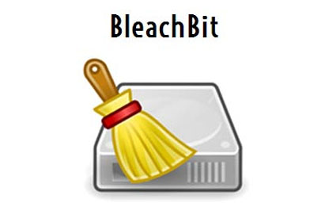BleachBit es una herramienta gratuita y de código abierto para ayudarlo a deshacerse de los archivos basura en su máquina . Es potente y fácil de usar, lo que le permite no solo eliminar archivos basura, sino también triturar y borrar archivos.
- Descargar el Instalador deb desde la Pagina Web Official bleachbit.org
- Instalar Archivos .dev
sudo dpkg -i Descargas/bleachbit_4.4.2-0_all_ubuntu2104.deb
Google Chrome
Google Chrome es un navegador web de código cerrado desarrollado por Google
- Descargar el Instalador deb desde la Pagina Web Official Google Chrome
- Instalar Archivos .dev
sudo dpkg -i Descargas/google-chrome-stable_current_amd64.deb
Chromium
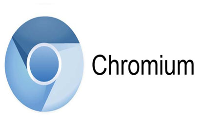Chromium es una base de código abierto para desarrollar un navegador web, mantenida por diversas compañías que posteriormente usan el código fuente para crear su propia versión de navegador con características adicionales
- Ejecutamos el comando desde la Terminal
sudo apt install chromium-browser
foxit reader | PDF
Foxit Reader es un lector PDF multilingüe. Tanto la versión completa, como la básica pueden descargarse gratis. Este software es notable por su corto tiempo para cargar y el tamaño pequeño de sus archivos. Ha sido favorablemente comparado con Adobe Reader. No puede leer archivos PDX.
- Descargar el Instalador deb desde la Pagina Web Official foxit.com
- Instalar Archivos run.tar.gz
- Descomprimir el archivo, buscamos el archivo .run para ejecutarlo
- Dentro de la carpeta desde la terminal le damos los permisos para el archivo
- Para ejecutarlo desde la Terminal
- Listo
sudo chmod 777 "nombre del archivo"
sudo ./"nombre del archivo"
Codecs y software de terceros
Si no se instalan desde la instalacion de ubuntu o para actualizar. Los códecs de vídeo más populares actualmente son Theora, VP8, MPEG-2, h. 264, Xvid y Divx. Respecto a los códecs de audio: AAC, FLAC, MP3, Vorbis (ogg) y WMA son los que más abundan. Los contenedores más utilizados son AVI, Divx, Matroska, Flash video, MP4, MPEG, Ogg, Quicktime, MXF y WebM.
- Desde una Terminal
sudo apt install ubuntu-restricted-extras
Gnome Tweak tool
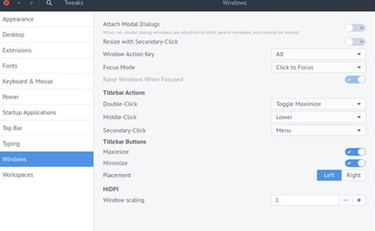GNOME Tweak Tool es una herramienta para habilitar la personalización de opciones avanzadas para GNOME3. GNOME Tweak Tool permite el ajuste de varias opciones avanzadas de GNOME que no pueden configurarse en gnome-control-center. (Tener más ajustes en la apariencia y configuraciones de Gnome)
- Desde una Terminal
- Buscar retoques desde el menu de incio
- Modificar la Fecha
- Mostrar porcentaje de batería
sudo apt install gnome-tweak-tool
VLC
VLC media player es un reproductor y framework multimedia, libre y de código abierto desarrollado por el proyecto VideoLAN.
- Desde una Terminal
- Listo
sudo apt install vlc
Audacious
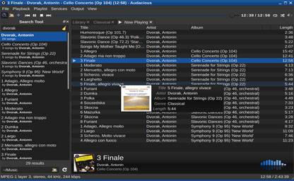Audacious es un reproductor de audio disponible como software libre para sistemas POSIX, como por ejemplo, GNU/Linux
- Desde una Terminal
- Listo
sudo apt install audacious
Comprimir y Descomprimir archivos
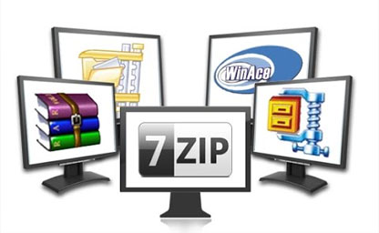Los archivos comprimidos (comprimidos) ocupan menos espacio de almacenamiento y se pueden transferir a otros equipos más rápidamente que archivos sin comprimir.
- Desde una Terminal
- Listo
sudo apt install rar unace p7zip p7zip-full p7zip-rar unrar lzip lhasa arj sharutils mpack lzma lzop cabextract
Balena etcher
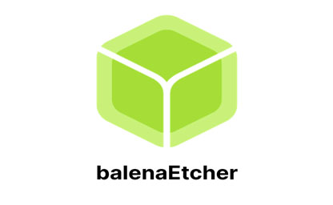balenaEtcher es un utilitario libre y de código abierto que se utiliza para escribir archivos de imagen, como archivos .iso y .img, así como carpetas comprimidas en medios de almacenamiento para crear tarjetas de memoria SD Live y unidades flash USB.
- Pagina Web Official balena.io
- Desde la Terminal Agregar repositorio Etcher Debian
- Actualizamos
- Instalamos
curl -1sLf \'https://dl.cloudsmith.io/public/balena/etcher/setup.deb.sh' \ | sudo -E bash
sudo apt-get update
sudo apt-get install balena-etcher-electron
Caffeine indicator
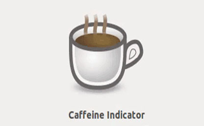Caffeine es un applet indicador simple en el panel de Ubuntu que permite prevenir temporalmente la activación del protector de pantalla, bloqueo de pantalla
- Desde la Terminal
sudo apt install caffeine
Sound converter
Sound converter es una aplicación designada para convertir archivos de audio de un formato a otro guardándalos en el disco duro del ordenador. Es posible convertir entre los siguientes formatos de audio: MP3, MP2, MP+, Ogg Vorbis, AAC, M4A, AMR, WMA, WAV, ADPCM, FLAC.
- Desde la Terminal
sudo apt install soundconverter
Curlew
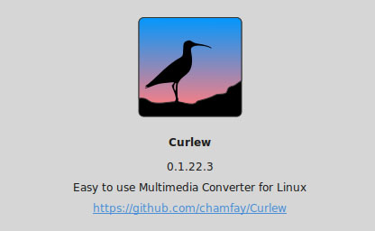Curlew es un convertidor multimedia de código abierto, gratuito y fácil de usar para Linux. Está escrito en Python y GTK3 y depende de FFmpeg o Libav .
- Pagina Web Official sourceforge.net
- Instalar Archivos .deb
sudo dpkg -i Descargas/curlew_0.2.5-1_all.deb
gparted
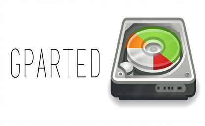GParted es un editor de particiones para el entorno de escritorio GNOME. Esta aplicación es usada para crear, eliminar, redimensionar, inspeccionar y copiar particiones, como también los sistemas de archivos que se encuentran en ellas.
- Desde la Terminal
sudo apt install gparted
indicator-keylock
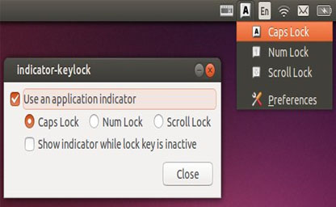indicator-keylock es una pequeña herramienta que puede ser muy útil en caso de que tu teclado no posea LEDs que muestren el estado de las teclas Lock: Caps de letras mayusculas
- Pagina Web Official launchpad.net
- Instalar Archivos .deb
sudo dpkg -i Descargas/indicator-keylock_3.1.1-0_ppa1_amd64.deb
k3b
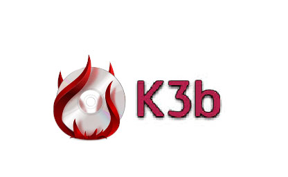K3b es una de las interfaces gráficas más completas que existen para la grabación de discos compactos y DVD bajo los sistemas operativos GNU/Linux y FreeBSD. Utiliza, entre otros, los programas cdrecord y cdrdao, y las bibliotecas de KDE.
- Desde la Terminal
sudo apt install k3b
slimbook battery
Slimbook Battery 4 es una nueva versión de la aplicación para controlar y aumentar la duración de la batería de los portátiles. Estos son algunos de los cambios más visibles. (Cuidado )
- Desde la Terminal Agregar repositorio slimbook battery
- Instalamos
sudo add-apt-repository ppa:slimbook/slimbook
sudo apt install slimbookbattery
ucaresystem
uCaresystem es un programa que reúne todas las funciones de actualización en una sola. Una manera de estar seguros de que mantenemos nuestro sistema Ubuntu siempre actualizado. De esta manera evitaremos posibles problemas de seguridad que pongan en riesgo nuestro equipo y nuestra privacidad. (update-upgrade elimina paquetes y kerne, etc)
- Pagina Web Official github.com
- Instalar Archivos .deb
sudo dpkg -i Descargas/ucaresystem-core_4.4.0_all.deb
openshot
OpenShot Video Editor es un software de edición de vídeo no lineal multiplataforma de Software Libre.
- Desde la Terminal
sudo apt install openshot